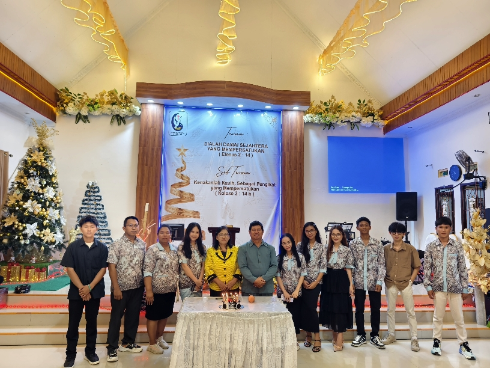

Berhasil
Tindakan berhasil diselesaikan.


Program Kerja & Kalender Pelayanan 2026
Sampai jumpa di persekutuan! Jangan lupa hadir tepat waktu.
Gereja Pantekosta di Indonesia (GPdI) adalah salah satu denominasi gereja beraliran Pantekosta terbesar di Indonesia yang berakar kuat pada peranan dan karunia Roh Kudus, pengalaman rohani pribadi, serta gaya ibadah yang ekspresif dan penuh kuasa.
GPdI hadir untuk memberitakan kabar keselamatan Kristus, memenangkan jiwa bagi Kerajaan Allah, dan membangun jemaat berlandaskan kebenaran Firman Tuhan.
PELPRAP (Pelayanan Pemuda dan Remaja Pantekosta) adalah wadah resmi di bawah naungan GPdI yang berfokus mendidik dan membimbing karakter rohani generasi muda agar memiliki karakter serupa Kristus.
Sebagai tiang penopang gereja masa depan, PELPRAP membekali pemuda dan remaja untuk bersinar dalam pelayanan, keluarga, pekerjaan, dan masyarakat.
Terdapat penyesuaian jadwal bagi Rifky, Cingmey, Citra, dan Ryuka, serta penyambutan untuk Gloria dan Vino Tidayoh mulai Oktober 2026. Catatan: Ibadah bulan November (Tuan Rumah Ketua & Penutupan) ditiadakan.
Tidak ada jadwal yang sesuai dengan filter/pencarian Anda.
Rotasi mingguan kebersihan gereja oleh kelompok pemuda:
* Catatan: Ketua PELPRAP tidak dimasukkan dalam jadwal kebersihan rutin.
Uji pengetahuan Alkitabmu dengan 2 mode permainan seru: Kuis Pilihan Ganda (200+ soal) & Tebak Tokoh Alkitab dengan petunjuk emoji!

Berdiri sejak 28 Januari 2024
Perjalanan iman yang penuh anugerah dan penyertaan Tuhan. Mari terus bertumbuh dalam kebenaran, berakar kuat, dan berbuah lebat bagi kemuliaan nama-Nya!
.jpeg)
.jpeg)
.jpeg)
Setiap potret mengabadikan sukacita dalam persekutuan doa, pujian, dan pelayanan bersama sebagai satu tubuh di dalam Kristus.
Dengan jumlah anggota inti yang solid, strategi pelayanan kita berfokus pada "Deep Connection" (hubungan mendalam), diskusi dua arah yang membangun iman, serta kepedulian nyata antar anggota.
Hierarki kepengurusan resmi Komunitas Pemuda dan Remaja (PELPRAP) GPdI Imanuel periode tahun pelayanan 2026.
Penasihat Pastoral & Majelis Gereja
Pemimpin Umum & Koordinator Program
Humas & Korespondensi
Keuangan & Kas Pelayanan
Absensi & Notulensi Rapat
Koordinator Alat Musik, Pemain Musik & WL
Bimbingan pastoral rohani & koordinasi dengan Gembala Sidang.
Memimpin seluruh kegiatan, keputusan rapat, dan mengayomi seluruh pemuda.
Koordinator Alat Musik & Song Leader